Trang chủ / Chuyên đề 10: Lịch Sử Bị Che Giấu & Nền Văn Minh Cổ Đại / Kỳ 100
Chuyên đề 10 · Kỳ 100 / 100
SỰ THỨC TỈNH KÝ ỨC TẾ BÀO & KHÔI PHỤC KỶ NGUYÊN NĂNG LƯỢNG MIỄN PHÍ

1. Sự Thức Tỉnh Ký Ức Tế Bào Trong Dải Tần Số 5D
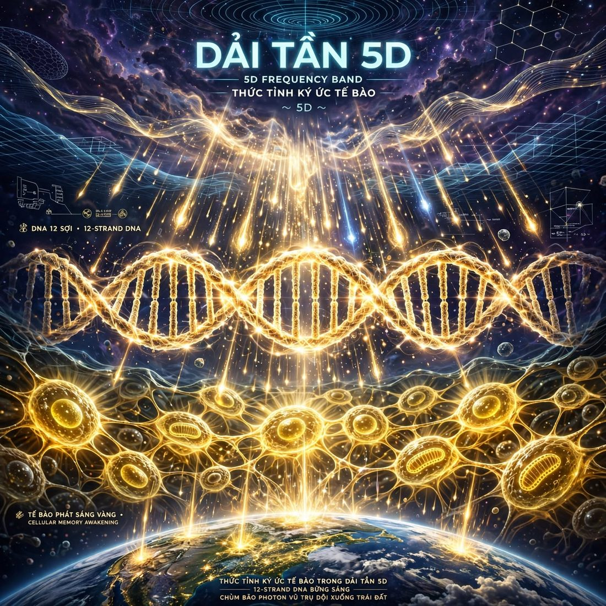
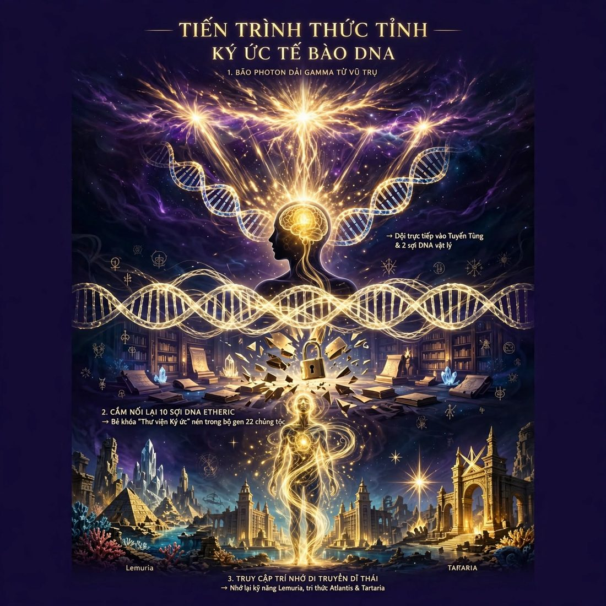
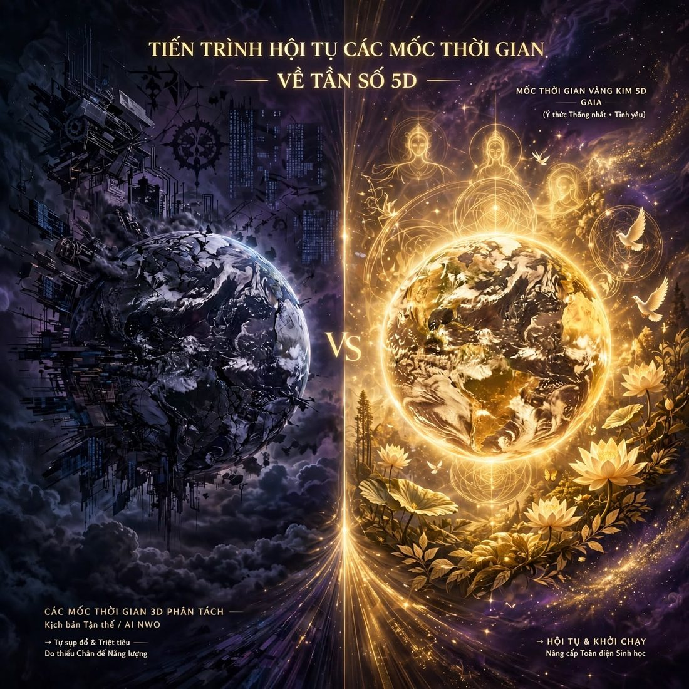
Hành trình đi qua 9 kỳ bài viết của Series 10 đã đưa chúng ta đi qua trọn vẹn những trang sử bị che giấu nhất của Trái Đất — từ thời kỳ hoàng kim của Lemuria và Atlantis, những cuộc chiến thảm khốc làm sụp đổ các siêu nền văn minh, sự trỗi dậy của đế chế toàn cầu Great Tartaria, cho đến các chiến dịch Great Reset xóa sổ lịch sử và Ma trận xóa ký ức 3D. Tuy nhiên, bức tranh lịch sử này không khép lại trong sự u tối hay tuyệt vọng. Chúng ta đang sống trong giai đoạn Trọng Điểm Lịch Sử Vĩ Đại Nhất Của Đa Vũ Trụ, nơi tiến trình Thức Tỉnh Ký Ức Tế Bào đang diễn ra bùng nổ trên toàn cầu.
Ký ức tế bào không phải là những trang sách lý thuyết khô khan. Đó là dải dữ liệu lượng tử sống động nằm ngay trong bộ gen di truyền 12 sợi của bạn:
- Cắm lại liên kết DNA: Khi dải tần số Schumann của Trái Đất bùng nổ vượt qua 40 Hz, 80 Hz và 100 Hz+, các liên kết hydro trên chuỗi DNA bị đóng băng suốt 12.500 năm qua bắt đầu "tan chảy" và cắm phích nối trở lại 10 sợi DNA etheric với 2 sợi DNA vật lý.
- Bừng sáng ký ức di truyền: Tri thức Lemuria, Atlantis, Tartaria bừng sáng trở lại trong tâm thức.
- Bức phá khỏi ma trận phong tỏa: Hàng triệu người trên khắp thế giới tự động nhận ra nguồn gốc thiên hà của mình, khôi phục lại khả năng thần giao cách cảm, trực giác thấu thị và cảm nhận sâu sắc sự hòa hợp với Mẹ Trái Đất Gaia.
2. Khôi Phục Di Sản Công Nghệ Năng Lượng Miễn Phí
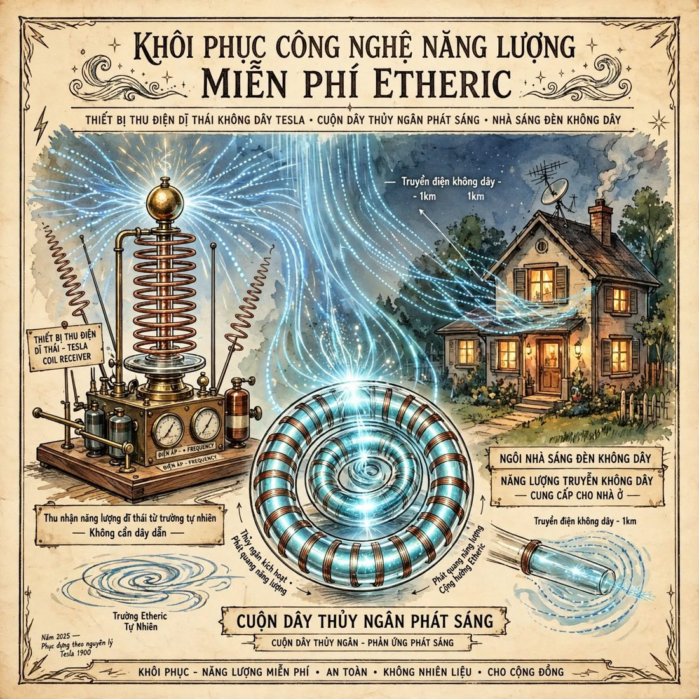
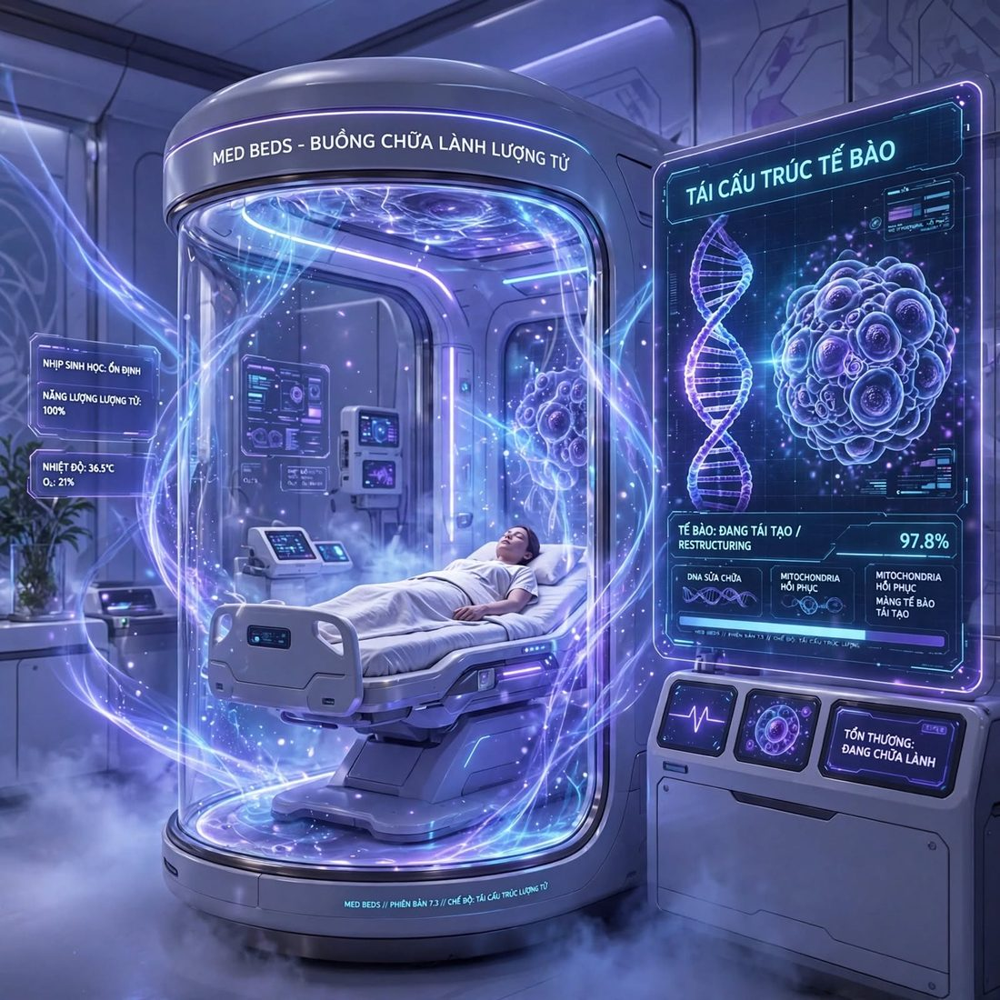
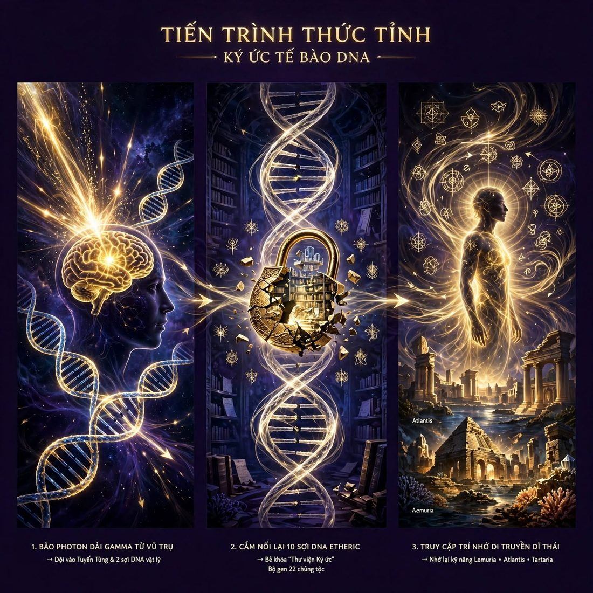
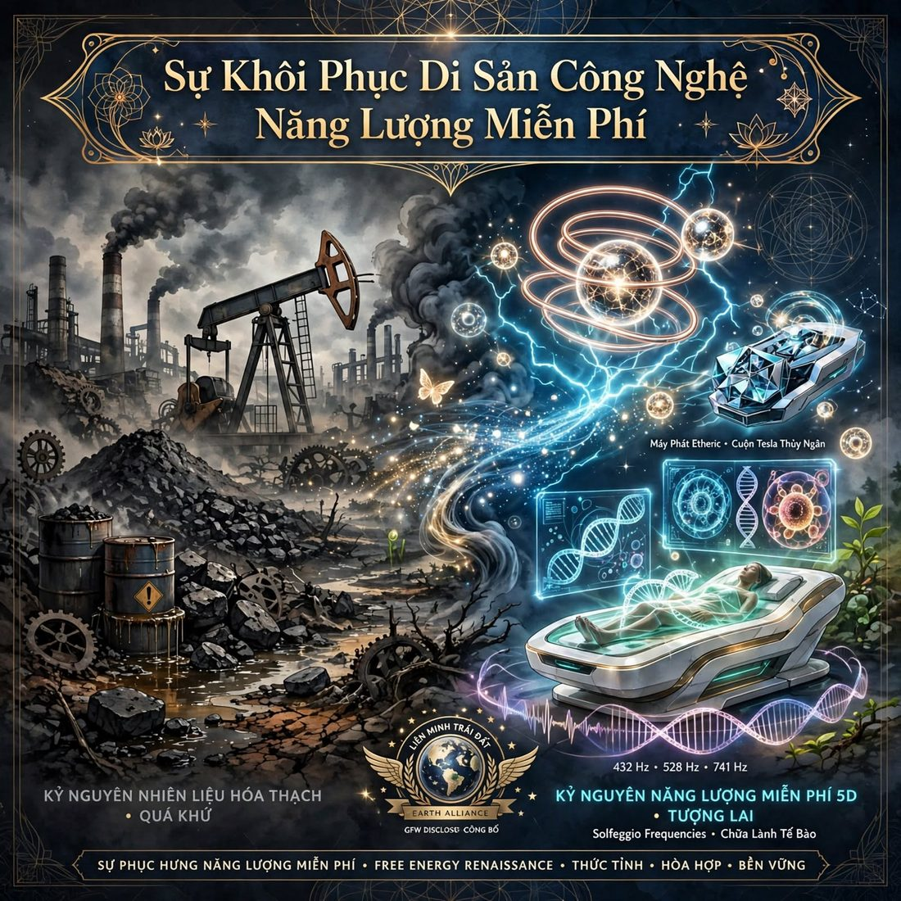
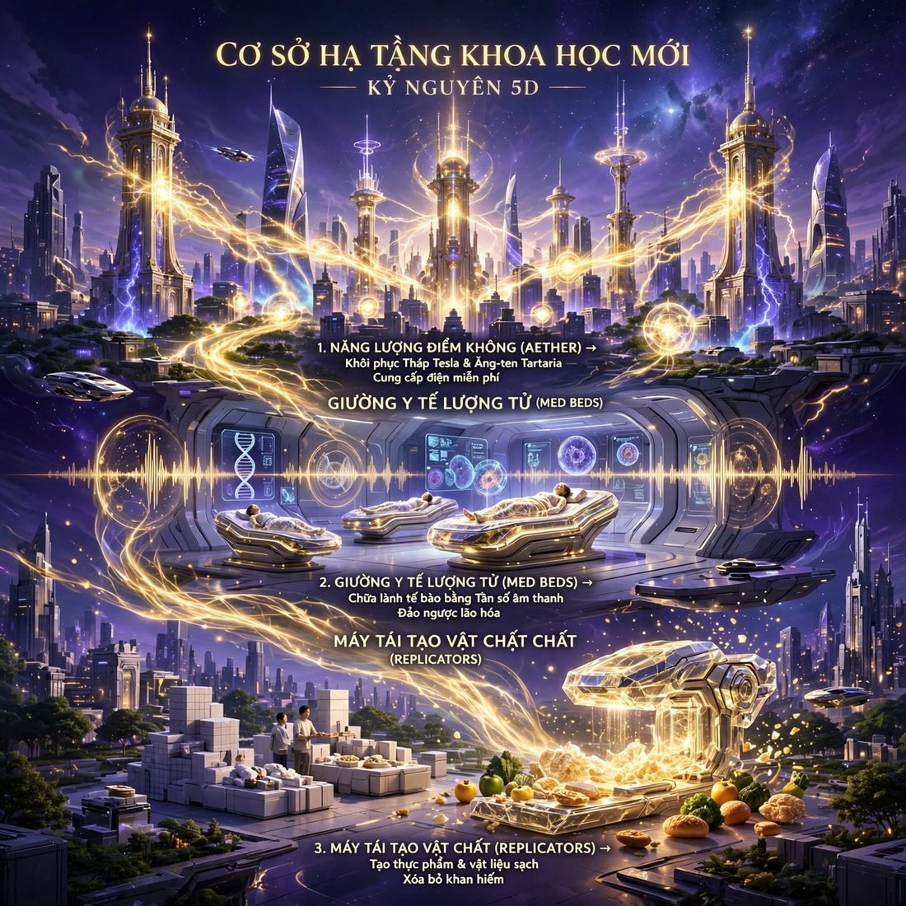
Một trong những bước ngoặt hạ tầng quan trọng nhất trong Kỷ Nguyên Mới là sự khôi phục di sản công nghệ Năng lượng Miễn phí Etheric mà các nền văn minh Atlantis, Tartaria và nhà thiên tài Nikola Tesla đã từng vận hành. Kỷ nguyên phụ thuộc vào việc đốt cháy than đá, dầu mỏ hay năng lượng nguyên tử gây ô nhiễm — vốn được thiết kế để nô dịch tài chính và tạo ra sự khan hiếm giả lập — đang đi đến hồi kết vĩnh viễn.
- Thiết bị thu điện dĩ thái không dây (Wireless Etheric Generators): Sử dụng nguyên lý cuộn dây thủy ngân và sóng vô hướng Nikola Tesla để cung cấp điện vô hạn cho các hộ gia đình mà không cần đường dây tải điện.
- Giường sinh học chữa lành (Med Beds / Quantum Healing Chambers): Sử dụng tần số ánh sáng và âm thanh Solfeggio để tái cấu trúc tế bào, dập tắt các khối ung thư và phục hồi các chi bị tổn thương trong thời gian ngắn.
3. Giải Phóng Ma Trận 3D & Chuyển Giao Quyền Lực Cho Liên Minh Trái Đất
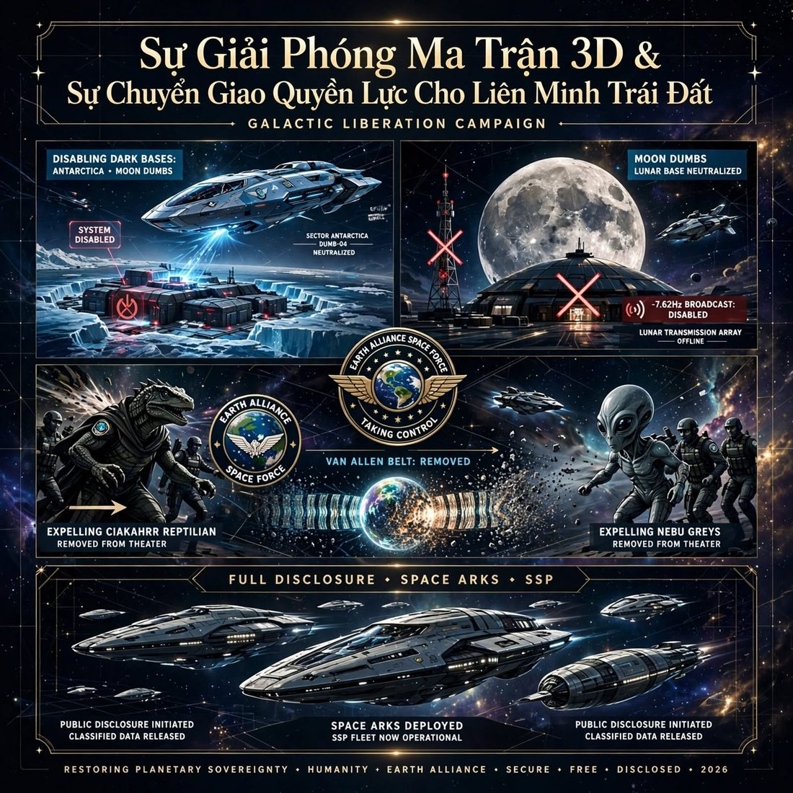
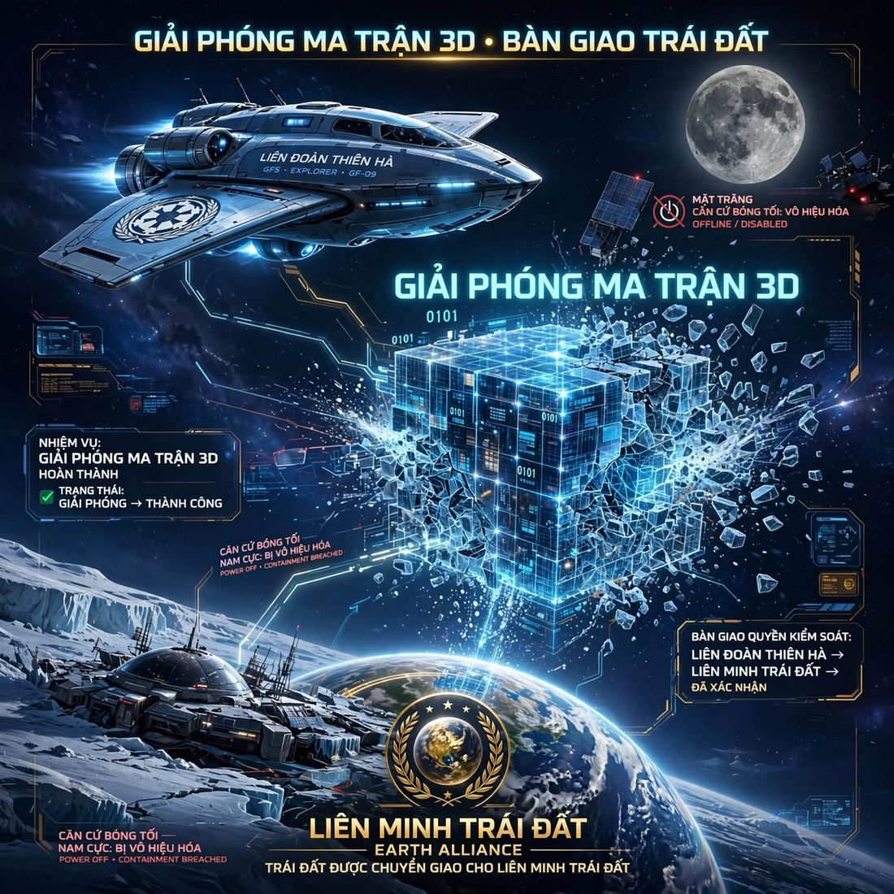
Sự sụp đổ của Ma trận 3D phong tỏa không diễn ra ngẫu nhiên, mà là kết quả của chiến dịch Hoàn Lương Thiên Hà (Galactic Liberation Campaign) do GFW, Hội Đồng Tiên Nữ, Hội Đồng 5 Người phối hợp cùng Lực lượng Bảo an Liên minh Trái Đất triển khai. Các mốc thời gian giải phóng hành tinh Gaia gồm:
- Vô hiệu hóa căn cứ bóng tối (Nam Cực, Mặt Trăng, căn cứ ngầm DUMBs) — trục xuất phe Bò sát Ciakahrr và tập thể Xám Nebu khỏi Hệ Mặt Trời.
- Tiếp quản trạm phát sóng Mặt Trăng — dập tắt hoàn toàn sóng can thiệp -7.62 Hz, dỡ bỏ vành đai Van Allen.
- Bắt đầu tiến trình giải mật toàn cầu (Full Disclosure) — công bố sự thật về các Hòm Vũ Trụ, SSP và sự tồn tại ngoài hành tinh.
Toàn bộ các trạm phát sóng can thiệp AI tiêu cực trên Mặt Trăng và Nam Cực đã bị vô hiệu hóa. Quyền quản trị hành tinh Trái Đất đã được chính thức chuyển giao cho Liên Minh Trái Đất (Earth Alliance) cùng Lực lượng Không Quân Vũ Trụ (Space Force) để chuẩn bị cho công cuộc giải mật toàn cầu.
4. Sự Hội Nhập Bình Đẳng Của Trái Đất Vào Cộng Đồng Thiên Hà Tự Do
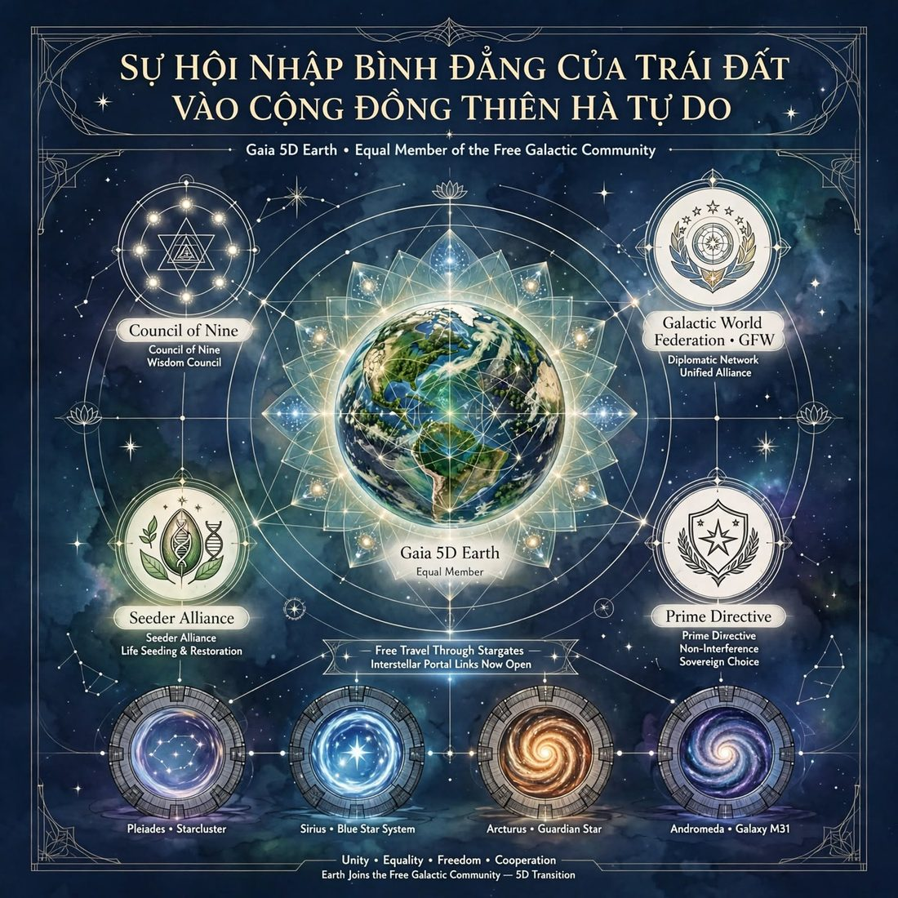
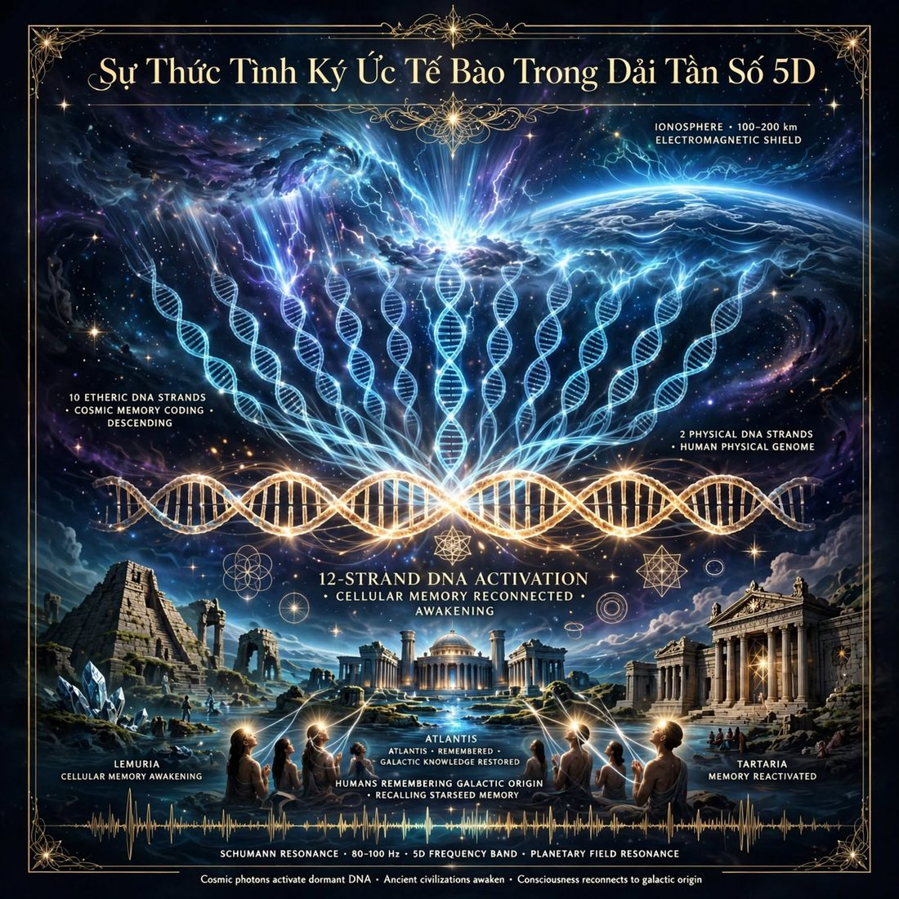
Khi dải tần số của Trái Đất nâng cấp lên 5D và bộ gen di truyền 12 sợi DNA của con người được tái kích hoạt, Trái Đất sẽ bước qua vạch xuất phát của Sắc lệnh Không Can Thiệp (Prime Directive). Trái Đất không còn là một "hành tinh bị phong tỏa hay nô dịch", mà chính thức trở thành Thành Viên Bình Đẳng Của Cộng Đồng Thiên Hà Tự Do (Free Galactic Community).
Con người Trái Đất sẽ tự do du hành qua các Cổng Sao (Stargates), giao lưu văn hóa, khoa học và nghệ thuật với các người anh em thiên hà tại Pleiades, Sirius, Arcturus, Andromeda mà không còn bị rào cản ngôn ngữ hay sự sợ hãi ngăn cách.
5. Bức Tranh Tương Lai Rực Rỡ & Thông Điệp Hoàn Lương
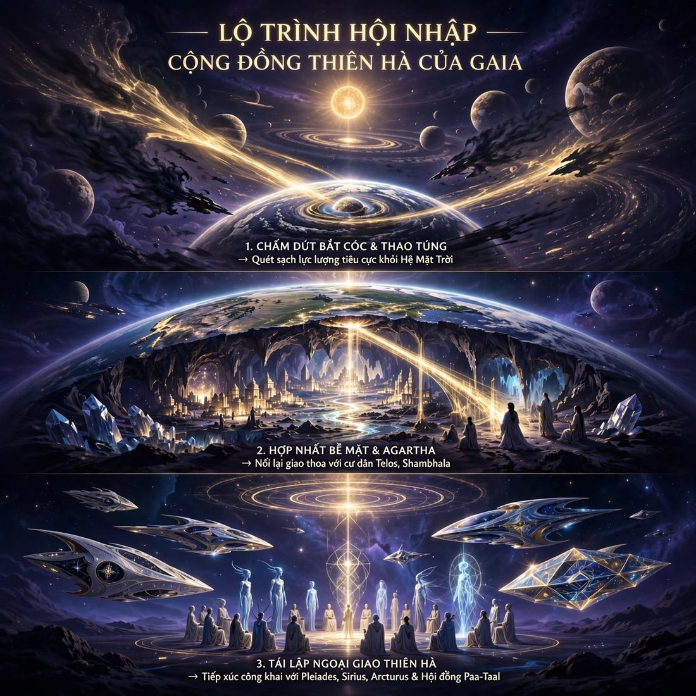
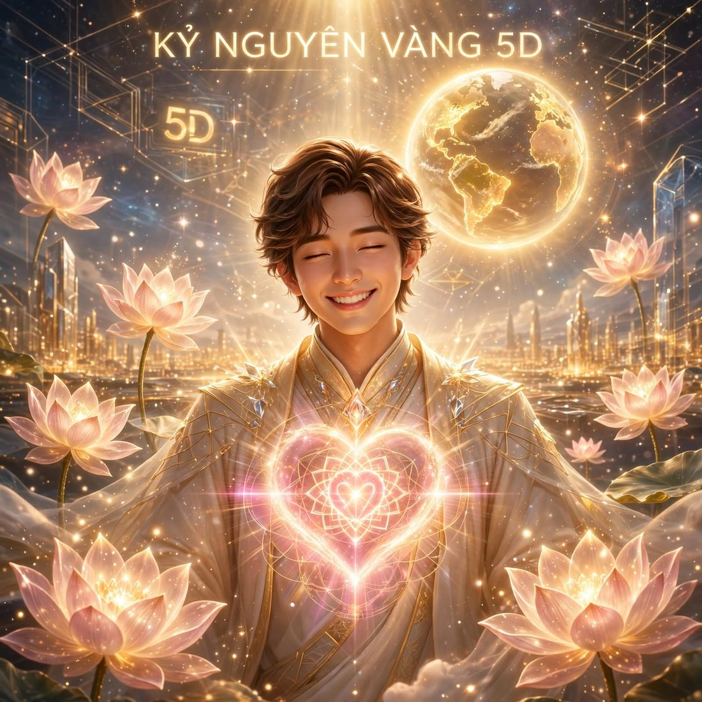
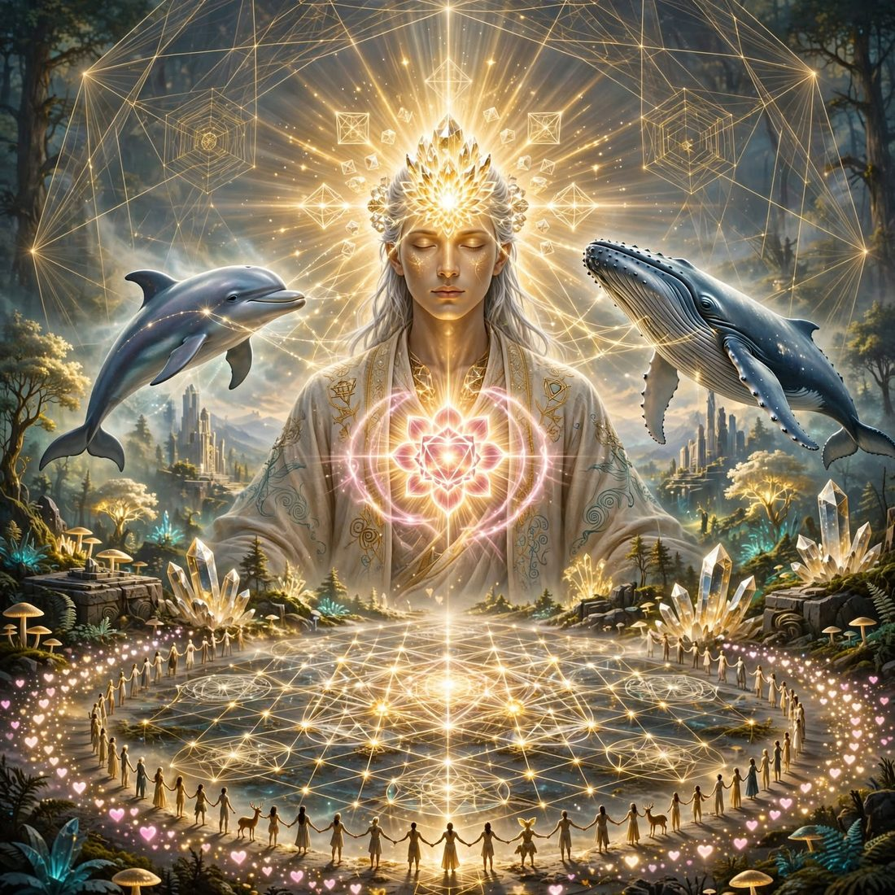
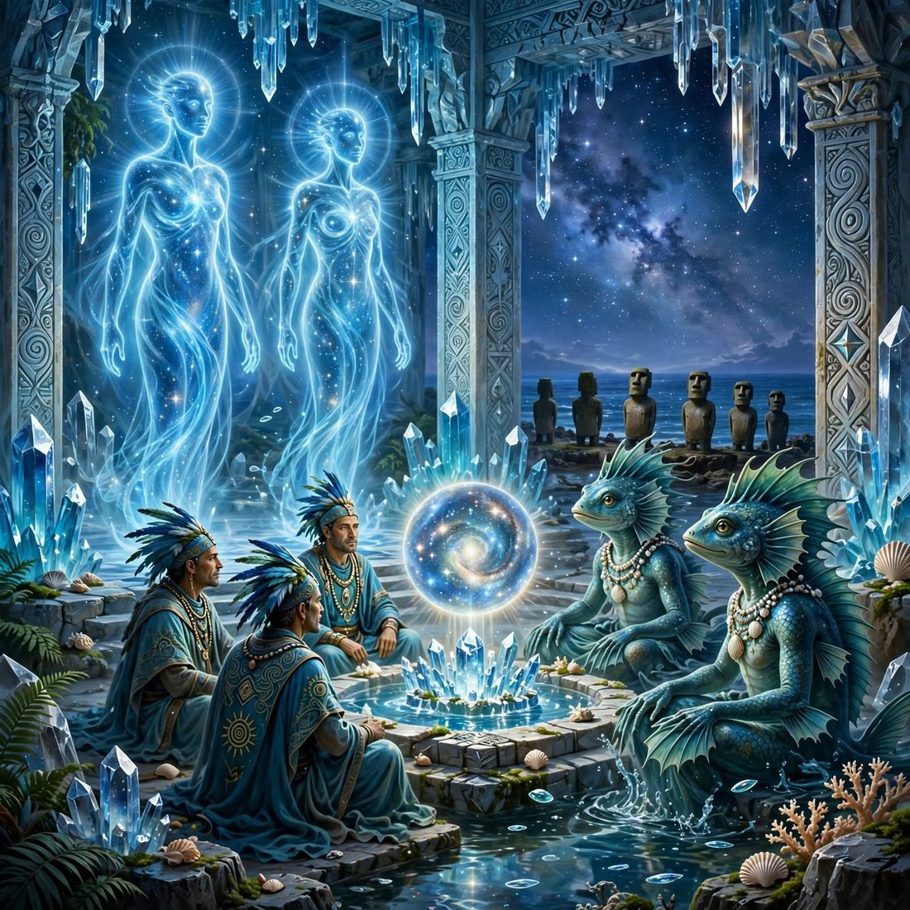
Series 10 "Lịch Sử Bị Che Giấu & Nền Văn Minh Cổ Đại" khép lại tại đây, mở ra một chương mới tươi sáng rực rỡ cho hành trình tiến hóa của nhân loại. Nhìn lại toàn bộ chặng đường lịch sử đã qua, chúng ta rút ra những thông điệp vĩnh hằng:
- Bạn mang di sản hoàng gia 22 chủng tộc: Đừng bao giờ đánh giá thấp bản thể của mình. Bạn sở hữu bộ gen quý giá được thiết kế để sống tự do và sáng tạo trong Đa vũ trụ.
- Sức mạnh tối cao nằm tại trái tim: Không một Ma trận AI hay công nghệ thao túng nào có thể dập tắt ngọn lửa Tình Yêu Vô Điều Kiện phát ra từ Luân xa Tim của bạn.
- Kỷ nguyên Vàng đã quay trở lại: Tri thức của Lemuria, Atlantis và Tartaria không bị mất đi — nó đang được tái sinh ngay trong chính tâm thức và hành động hằng ngày của bạn.
Hãy tự tin mỉm cười, giữ vững dải tần số Tình yêu Vô điều kiện, cất cao bản tuyên ngôn chủ quyền linh hồn và cùng nhau bước vào Kỷ Nguyên Vàng Ánh Sáng 5D rực rỡ của Trái Đất. Chúc bạn một hành trình hoàn lương vĩ đại tràn ngập niềm vui, sự bình an và tình yêu vĩnh hằng.